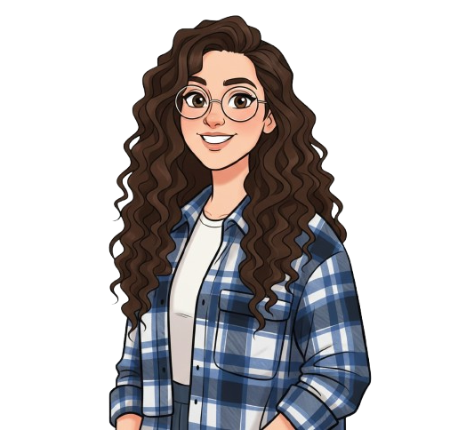

שלח/י וואטצאפ
שלח/י וואטצאפ
 שלח/י מייל
שלח/י מייל
 בקר/י בלינקדין
בקר/י בלינקדין

אני מעצבת UX/UI ממוקדת בתכנון ממשקים וחוויית משתמש (אפליקציות ואתרי ווב). ארגז הכלים המקצועי שלי כולל את כל שלבי העיצוב: ממחקר צרכים ואפיון עד יצירת אבטיפוס ועיצוב סופי.
במקביל, אני רוכשת ידע ב-HTML ו-CSS. הבנה זו מאפשרת לי ליצור רכיבי עיצוב ישימים ולתקשר בצורה מדויקת עם מפתחים.

פרויקט זה מציג את יכולותיי ההתחלתיות, ואת השילוב בין החזון העיצובי למימוש הקוד – יכולות אותן אני ממשיכה לפתח ולהעמיק במהלך לימודיי.